Azalo.net
Создание технического задания
ТЗ состоит из ряда блоков, которые формируются по определенным правилам. Ниже представлена структура ТЗ и ей основные части.
Краткое описание каждого блока ТЗ
- Общие положения - в этом разделе даётся общая информация о сайте: сфера деятельности компани, целевая аудитория, конкуренты и т.д и т.п.
- Функциональное назначение - перечень функций которые выполняет сайт, например интернет магазин предоставляет информацию о товарах и позволяет выполнять покупку товара.
- Эксплутационное назначение назначение - смысл выполняемых функций, например, для фирмы открытие интернет магазина - это возможность расширить продажи за счет интернет-пользователей.
- Термины и определения - раздел в котором пояняются специфичные термины. Например что такое хостинг, доменное имя или специфичные для проекта термины.
- Типы данных - в этом разеделе описываются структуры данных, которые будут использованы при создании сайта. Например структура данных соответсвующая одному товару будет включать в себя название товара, артикул, фотографию и цену.
- Страницы - подробное описание публичных страниц
- Заголовки страниц - указание заголовков для всех публичных страниц
- Страницы админки - подробное описание админских страниц
- Наполнение контентом - условия предоставления контента и наполнения им сайта
- Требование к хостингу - требования предъявляемые к хостингу: операционные системы, базы данных интерпретаторы и т.д.
- Требование к надежности - условия обеспечения надежности, бэкапы и т.д.
- Условия сдачи и приемки - условия при наступлении которых проект считается выполненным.
Формирование ТЗ с помощью azalo.net
Рассмотри как формируется техническое задание на сайт с помощью azalo.net.
Общие положения, Функциональное назначение, Эксплутационное назначение назначение, Наполнение контентом, Требование к хостингу, Требование к надежности, Условия сдачи и приемки
Наиболее просто формируются блоки отмеченные на картинке выше желтым цветом. Эти блоки (номера 1...3, 9...12) представляют собой просто кусочки текста, которые могут быть скопированы из "Кладовки". Для того чтоб перейти к редактированию этих блоков необходим щелкнуть на "Общие положения" на страничке проекта:
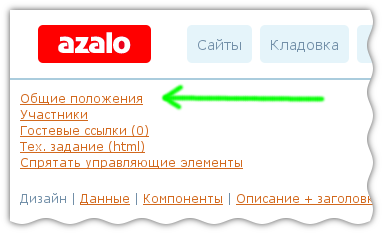
Допустим в "Кладовке" находятся описания требований к хостингу как показано на изображении ниже:
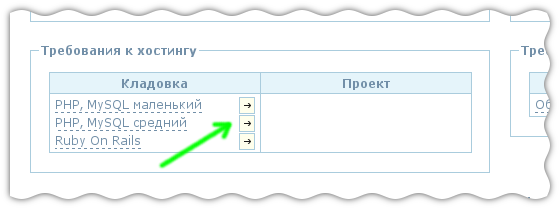
Предположим, что наш проект будет сделан на PHP, и нам необходимо указать соответсвующие требования к хостингу. Для этого необходимо наиболее похожие требования добавить в проект. Для этого нужно нажать на кнопку, отмеченную зеленой стрелкой. В результате мы увидим, что к проекту добавилось требование к хостингу:
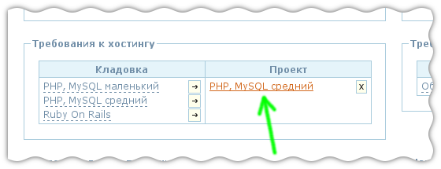
Теперь можно нажав на ссылку отмеченную стрелкой можно подкорректировать описание требовоний к полному соотвествию. При этом текст требований находящийся в "Кладовке" отснется неизменным, т.к. к проекту добавляется копия требований, находящихся в кладовке.
Если перейти к просмотру техзадания, то можно увидеть, что в нем появился соответвующий текст:
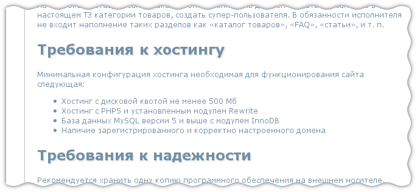
Термины и определения
Термины и определения задаются аналогично общим положениям, но в отличие от общих положений, термины и определения могут быть определены не только для проекта, но и для компонента. Соответсвенно в текст технического задания попадают термины и определения не только связанные с проектом, но и те термины, которые связаны с используемыми компонентами.
Для примера предположим что у нас есть сайт-каталог. Проекту можно задать общие для сайта определения, такие как, что такое "сайт" и "хостинг":
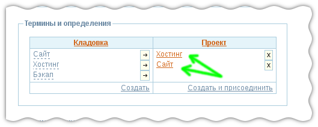
Теперь компоненту укажем характерные для каталога определния:
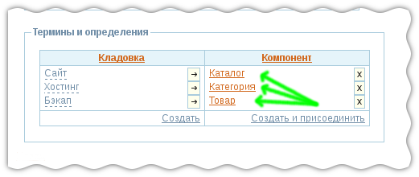
Добавив компонент к проекту в ТЗ можно будет увидеть определения, и из проетка, и из компонента:
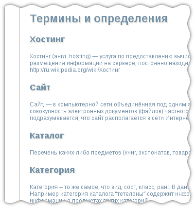
Типы данных и валидаторы
Данный раздел содержит информацию о всех структурах данных, котороые связаны с проектом. Перечисляются структуры связанные, как со страницами проекта, так и со страницами компонентов подключенных к проетку.
Информация о структуре включает в себя название структуры, список её переменных с указанием типов данных и валидаторов.
Также в этом разделе перечисляются валидаторы связанные со структурами данных. Для каждого валидатора указывается его название, описание, что он проверяет и сообщение об ошибке, если ввод пользователя некорректен.
Картинка ниже показывает откуда берутся какие данные для ТЗ.
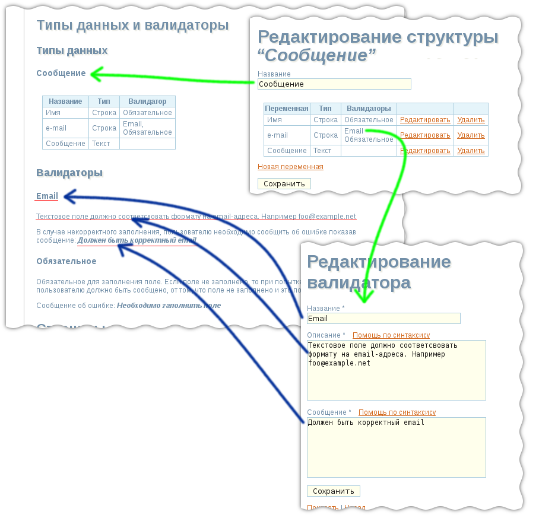
Описание страниц
Эта часть ТЗ описывает страницы публичной части сайта. Описание одной страницы выглядит следующим образом:
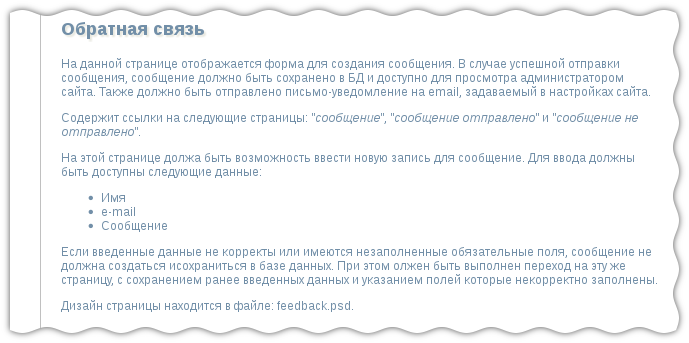
Это описание в свою очередь формируется из нескольких частей, на которые влияют различные данные, вводимые в систему на разных этапах и в разных местах. Ниже мы рассмотрим какие данные влияют на это описание.
Первый абзац текста - это текст, который вводится в описание страницы в режиме "Заголовки+описания". Т.к. этот текст вводится вручную, сюда имеет смысл писать, в первую очередь, такие вещи, как нестандартное поведние, различные тонкости работы, т.е. всё то что не может быть сгенерировано автоматически.
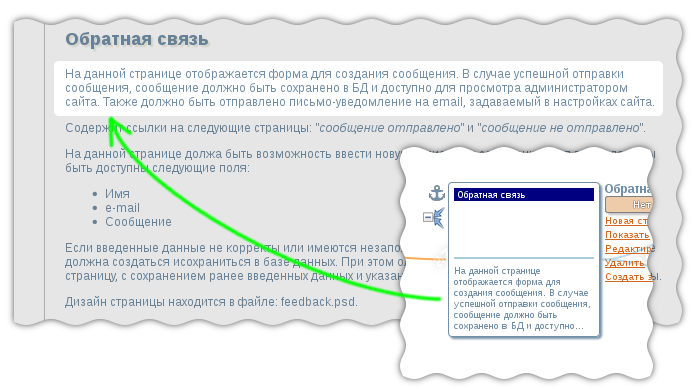
Далее идет перечень страниц, на которые ссылается данная страница. Этот список формируется на основании связей в структуре сайта, и как гороврилось ранее, связи в дереве соответсвуют далеко не всем ссылкам на сайте, поэтому, сюда в случае надобности нужно будет дописать ссылки в ручную.
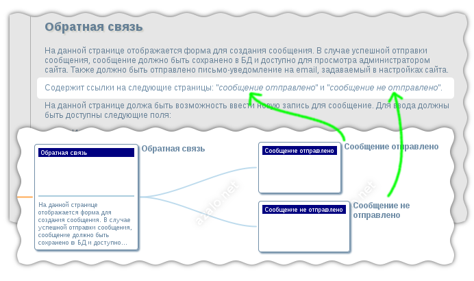
На текст следующего блока влияют такие данные, как название структуры, её состав, валидаторы переменных и операции выполняемый на этой странице:
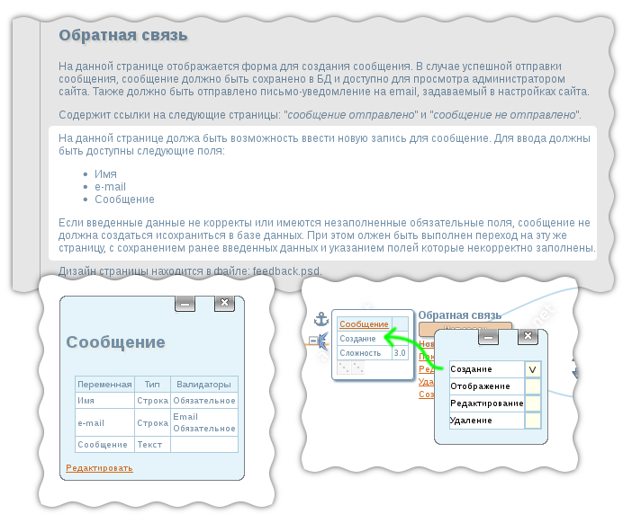
Последний абзац содержит информацию в каких файлах искать дизайн страницы. Имя файла соответсвует имени файла, который был загружен для страницы.
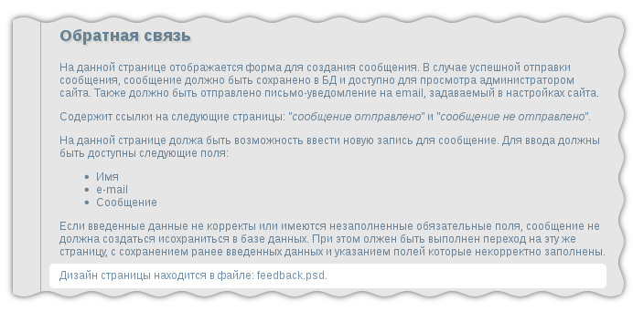
Если для страницы было загружено несколько файлов с дизайнами, то этот абзац приобретает несколько иной вид, дополняя текст информацией о том, что это за дизайн:
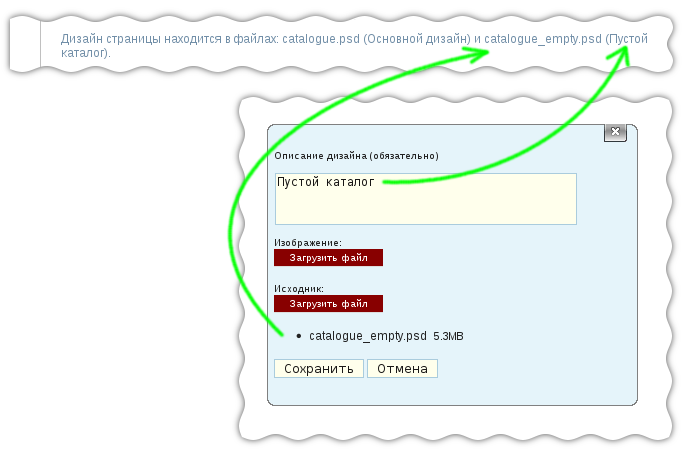
Заголовки страниц
Данный разедел содержит указание заголовков для всех страниц сайта. Тех заголовков, которые задаются HTML-тэгом <title>
Формирование этого списка основывается на данных введенных для каждой страницы. Указать заголовки можно переключившись в режим "Описание + заголовки". Если для страницы заголовок не указан, он будет заменен "пробелом", который как-бы будет нам намекать, что мы что-то забыли. Это проиллюстрировано картинкой ниже.
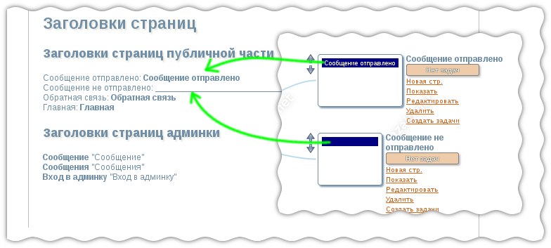
Страницы, для которых не указаны заголовки в списке будут иметь пробел вместо текста.
Содержание